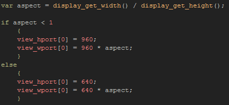
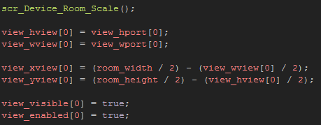

Tutorial
Page 12 of 15
Devices Part II
So, you have placed the room rm_Devices_2_1 at the top of the resource tree, and you have set the Global Game Settings orientation to lock on landscape. Let's add some code to our game
to scale it to the "best fit" for your device.
Create a new script asset and call it scr_Device_Room_Scale, and for this example, since it is a single room, the script to add is short and simple:

If you have worked through all of this tutorial, you should be very familiar with this script! It is almost exactly the same as those we have previously used for other platforms, only now the limiting values for the
minimum width (or height) of the view are our base dimensions of 960x640.
You should now open the object labelled obj_Devices_Room_Scale and add the following to the Create Event:

For this example, we are calling the script to set the view port sizes, and then after that the object sets the view width and height then centers the view on the screen. Finally we make the view visible
and enable the views. You can now test this on your chosen device, and you will see that the room is "cropped" slightly to our minimum height of 640px and the width scaled to fit the display.
Note that if you hold the device in a portrait position rather than a landscape one when testing, even with the orientation locked, you can get the wrong results for the room. This may appear to be a very
real problem for devices as the user may not be holding the device in the correct orientation for your game when it starts up, but the final compiled app should detect this, so you only need to be aware of the
issue while testing.
Before continuing to the next page, take a moment to move the room rm_Devices_2_2 up to the top of the room asset list, set the Global Game Settings to portrait and run the game
again, holding your test device in portrait too. This room is another simple example of the above script being used to crop/expand the view to fit the device screen, but instead of being in landscape, it is
in portrait.
If you have access to multiple platforms, it is also a good idea to test this script with different devices and display sizes, as you can get a bteer idea of its possibilities and limitations that way. For example, if your
device has a resolution of (for example) 480 x 800, then you will see that when in landscape mode you can actually see outside the room on either side of the screen. This is an unfortunate side effect of using this
technique and one of the reasons why we use a 640 x 960 core view, rather than the actual room size of 768 x 1024. If you test the script using the room values, you can see that this external area is far
bigger!
One way to mitigate this situation is to manually draw a black outline outside of the room and so create a small "letterbox" effect for your game. this is also what you would have to do, should your game actually
be less than the core height (or width), for example 1024 x 480. This size game room would require a manual border to be drawn above and below the room, unless you want the player to see the
background colour of the room.
If you move the room rm_Devices_2_3 to the top of the room asset list and (with the global game settings locked to landscape) run the game, you can see this happening. If you now un-comment the draw
event of the object obj_Devices_Room_Scale you can see how the "letterboxing" looks.
Click on the Next button to go to the next page of the tutorial.